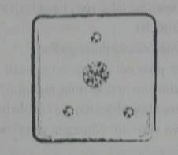

Jake tỉnh đậy với lớp chăn nệm vây bọc quanh người. Cậu phải mất một khắc mới nhớ ra mình đang ở đâu. Cậu vừa mơ thấy cha mẹ. Cậu ngồi thẳng dậy, dụi dụi mắt. Tim cậu vẫn còn đập thình thịch như một chú ngựa vừa chạy một vòng nước rút quanh đường đua. Giấc mơ vẫn còn hiển hiện... và cậu vẫn còn kinh hãi.
Cậu đang ở dưới mỏm đá gần nhà, đào xới tìm hóa thạch thì nghe tiếng cha mẹ gọi mình từ trên cao. Âm điệu thất thần trong giọng nói của họ thúc cậu tức tốc tìm đường men lên trên mỏm đá, nhưng những vách đá bỗng dựng đứng lên cao gấp hai lần bình thường và chẳng có đường nào để thoát ra. Trong lúc đó, cha mẹ cậu vẫn hét lên giục giã, nhưng cậu chẳng thể thấy được họ. Đang tìm đường thoát ra khỏi mỏ đá, cậu bỗng thấy một chấm đen trên nền trời. Jake biết đó chính là cơn cớ nỗi hãi sợ của cha mẹ mình. Jake chăm chú nhìn, chấm đen càng lúc càng lớn dần lên, hiện nguyên hình là một con mãnh thú có cánh, đen sì như bóng đêm trong cái hầm mỏ tăm tối nhất. Cổ con quái thú nọ như cổ rắn, còn đầu thì có hình một thanh giáo. Con quái thú bổ xuống Jake, nhưng sải cánh mãnh thú vẫn trải ra càng lúc càng rộng hơn, che kín cả mặt trời. Bóng con quái thú đổ lên người Jake, nuốt chửng cả mỏ đá. Không khí bỗng trở nên lạnh lẽo như thể đang giữa mùa đông.
Rồi bỗng một giọng nói vọng xuống, như thể có một ai đó lẩn khuất đang cười trên lưng con mãnh thú nọ.
"Đến đây với ta.."
Đó là những lời Jake đã nghe thấy khi rơi xuyên qua bóng tối xuống miền đất lạ lùng này. Những lời ấy khiến cậu bừng tỉnh khỏi cơn ác mộng.
Jake ngồi thêm một lúc cho hoàn hồn. Cả cơ thể cậu nhớp nháp mồ hôi, như thể vừa trải qua một cơn sốt đột ngột. Cậu vẫn còn nghe đâu đây giọng nói rít lên, tưởng như có một thứ gì đó đang cố đào bới thoát ra khỏi huyệt mộ. Cuối cùng, cậu cũng tung chăn nệm ra, vẫn chỉ vận mỗi quần soóc, cậu đi ra chỗ cửa sổ.
Cậu mở của chớp, ánh nắng ban mai tràn vào phòng. Một con thằn lằn bay tí tẹo lướt qua cửa sổ phòng cậu, ở đây người ta gọi nó là con cánh phi tiêu. Con thằn lằn bay ré lên một tiếng chói tai rồi mất dạng.
Jake hít một hơi dài, cố tự trấn tĩnh lại.
Xa xa bên dưới, cả thị trấn Calypsos đã rộn ràng nhộn nhịp. Những chiếc xe chở hàng đã lăn bánh; người ta đổ xô ra đường, mấy con thú kéo dềnh dàng qua lại trên mấy đại lộ. Jake như cảm thấy có một lực hút kéo cậu ra ngoài khám phá thế giới lạ lẫm này. Cậu quay lưng vào trong, đi tìm lại mấy thứ quần áo cậu đã vứt vương vãi dưới đất hồi tối hôm qua. Sau một ngày mệt mỏi với đủ thứ khởi đầu lạ lùng tại miền đất Calypsos này, lại thêm những kích động trên đỉnh tháp, cậu chỉ ngủ được rất ít.
Căn phòng của cậu chỉ lớn hơn một cái kho xép xây bằng đá một chút, nhưng lại rất ấm cúng. Căn phòng có một chiếc giường, cạnh đó là cái bàn, trên bàn để một ngọn đèn, thêm một cái ghế và một cái tủ gỗ chạm khắc hoa văn của người Maya.
Vừa quay bước vào phòng, Jake lập tức nhận ra hai điều. Quần áo cậu vứt vung vãi trên sàn đã được xếp gọn gàng trên ghế. Dường như chúng đã được giặt ủi phẳng phiu. Cậu cầm chiếc áo khoác đi săn lên. Chiếc áo vẫn còn ấm như thể vừa được rút từ máy sấy ra.
Nhưng thế này thì lạ lùng hết sức, chứ gì nữa!
Rổi cậu nhận thấy cánh cửa tủ hơi hé mở. Cáu đẩy tủ rộng ra thấy túi đồ của mình đã được ai đó trả lại. Cậu kéo khóa ra, kiểm tra bên trong. Mọi đồ đạc dường như vẫn còn nguyên, nhưng cậu vẫn xem lại cho chắc. Gần đến đáy túi thì cậu chạm tay trúng một thứ gì đó lạ lùng.
Gì thế nhỉ?
Cậu thò tay sờ vào ngăn trong. Suốt mấy cuộc đụng độ ngày hôm qua, đáng ra cái túi phải toang hoác ra rồi mới phải chứ. Cậu tìm thấy một cái khuy bằng bạc cỡ bằng một đổng xu. Jake tung cái khuy lên. Cậu lấy móng tay khẩy ra một cái ăng-ten tí hon.
“Một con bọ nghe lén...” cậu bật ra, choáng váng.
Cậu chau mày. Tập đoàn Bledsworth đã đưa cho cậu cái túi này cùng với bộ quần áo mới. Rõ ràng họ còn đưa thêm cho cậu một thứ khác nữa.
Jake giận sôi lên trước sự xâm phạm ấy. Cậu băng qua bên kia phòng; quẳng thiết bị nọ ra ngoài cửa sổ. Vừa thấy vật nọ thoáng trên nền trời, một con cánh phi tiêu đã lao xuống, chụp lấy nó giữa không trung như thể đó là một con bọ thứ thiệt rồi bay đi mất.
Jake lắc đầu.
Tại sao chính tập đoàn tải trợ cho cuộc khai quật của cha mẹ cậu lại ra tay cấy một con bọ nghe lén theo cậu chứ?
Cậu nhăn nhó. Cậu cũng chẳng biết sao, và bất cứ một cuộc điều tra nào cũng phải để sau. Giờ cậu có những mối bận tâm khác cấp bách hơn.
Jake quan sát khắp phòng. Cửa phòng ngủ vẫn đóng, nhưng rõ ràng có một ai đó đã vào phòng khi cậu ngủ.
Cậu lo lắng vặn vẹo mấy đầu ngón tay. Đêm qua cậu đã vì phòng xa mà làm điều này. Jake vội vã chạy qua đầu kia phòng, quỳ xuống bên cạnh giường. Cậu chúi xuống gầm giường, tìm lại mấy quyển nhật ký hành trình của cha mẹ. Cậu giấu chúng xuống đó cho an toàn.
Jake vội vã gom mấy cuốn sách lại rồi lẹ làng thay đồ. Cậu bỗng cảm thấy như có tai vách mạch rừng đang nhòm ngó; nghe ngóng, theo dõi. Cậu nhét mấy quyển nhật ký vào lại áo khoác, đặt chúng đâu vào đấy, lại thấy vững dạ. Cậu khoác túi lên vai.
Xong xuôi hết rồi Jake mới đi ra chỗ cánh cửa, hé mở cửa ra một chút. Phòng cậu nằm trên tầng hai nhà thầy Balam. Cầu thang dẫn xuống phòng sinh hoạt chung chỉ cách đó một khoảng hành lang ngắn. Jake nghe tiếng rì rầm mơ hồ không rõ là gì. Cậu đi lại chỗ đầu cầu thang, nghe một giọng hơi cau có: “Đi đánh thức cậu ta dậy đi Mari!”
“Không được, cha bảo cứ để bạn ấy ngủ mà.”
Jake lén nhòm xuống dưới, thấy trên bàn là một quyển sách mở rộng trước mặt Marika. Nhỏ đặt một ngón tay trên mỗi trang giấy. Thằng nhóc mặc áo choàng, mang thứ xăng-đan đặc biệt của người La Mã thì đang bồn chồn đi qua đi lại quanh bàn. Đó là Pindor. Jake nhớ Trưởng lão Tiberius đã giao cho thằng nhóc này nhiệm vụ canh gác cậu. Rõ ràng Pindor đã đến lãnh trách nhiệm.
Hình như Marika nhận ra Jake đang ở đâu đây, nhỏ nhìn lên phía cầu thang. Jake đứng thẳng dậy, hơi đỏ mặt một chút, cậu bối rối vì bị nhỏ bắt gặp đang hóng chuyện thế này. Cậu vẫy vẫy tay chào rồi đi xuống thang.
Marika đứng dậy. “Còn một ít cháo đấy" con bé chỉ vào một cái tô đang đậy lại. “Vẫn còn ấm.”
Pindor đảo mắt, “Chúng ta không có thời gian...”
Marika quắc mắt khiến Pindor cứng họng. "Vì bạn đã ăn hết ba tô rồi.”
“Thì mình đói muốn chết mà", nó xoa xoa bụng, “Đêm qua mình đi ngủ có gì bỏ bụng đâu.” Nó nói câu cuối còn nhăn mặt nhìn Jake như thể đó là lỗi của Jake vậy.
Marika thở dài, quay sang Jake. Đôi mắt thâm quầng và mỏi mệt. Hình như nhỏ cũng chẳng ngủ được mấy tí. "Cha bảo trước khi đi thì ghé qua nói chuyện với cha chút.”
Jake nhìn vào cửa thư phòng sát bên.
“Không,” Marika bảo, “Cha ở trên phòng Thiên Văn với Quốc sư Oswin ấy. Hai người đã ở trên đó suốt đêm qua."
“Để xem xét cái đầu mũi tên phải không?” Jake hỏi.
“Mình nghĩ thế.”
Pindor chúi lại gần. “Bạn đã thấy huyết thạch thật hả?”
Jake nheo mảy, “Cái gì cơ?”
“Cái đầu mũi tên đã hạ gục Thợ săn Livia và khiến cô ấy bị trúng độc đó.”
Jake sực nhớ ra mấy mẩu đá chết ngưởi đen kịt như màu bóng tối đông đặc lại. Một cơn lạnh len lỏi vào tâm trí cậu khi nhớ lại.
“Cả hai đứa mình đều thấy đầu mũi tên” Marika bảo, bắt gặp ánh mắt Jake. “Cha mình lúc đó đã dập tắt nó ngay, rút kiệt sức mạnh của nó.”
“Ước gì mình thấy nó nhỉ", Pindor bảo.
“Không đời nào," cả Marika và Jake gắt lên cùng một lúc, làm Pindor giật mình lùi một bước.
“Đừng bao giờ cầu mong điều đó,” Marika nói tiếp. Nhỏ lại khua tay chỉ phía cái bàn, thử đổi để tài. “Jacob, bạn có muốn ăn gì không? Cháo sáng nay nấu với mứt quả đấy, ngon lắm.”
Cậu lắc đầu, nhớ tới mấy mẩu huyết thạch hôm qua, cậu chẳng còn thấy muốn ăn gì nữa. “Thôi, cảm ơn bạn, mà... à mà bạn cứ gọi tớ là Jake đi” cậu nói thêm.
Chút đặc quyền nho nhỏ khiến Marika hơi mỉm cười, rồi nhỏ lại chỗ cầu thang. “Vậy thì tụi mình đi tạm biệt cha trước khi lên đường cái đã.”
“Đi đâu chứ?” Jake hỏi.
“Cha nghĩ chắc bạn nóng lòng muốn đi thăm chị lắm, để biết chị ấy đang được bình an và yên ổn cũng như bạn vậy.”
Jake chầm chậm gật đầu. Dù còn lâu mới yên ổn, nhưng cậu không nói gì. Cậu cũng cảm thấy hơi tội lỗi nữa, vì chẳng buồn nghĩ ngợi xem Kady sống chết thế nào.
Trên đỉnh tháp, ánh mặt trời rực rỡ phản chiếu trên mái vòm bằng đồng của phòng Thiên Văn. Jake nheo mắt cho đỡ chói, rảo bước theo Marika bước vào cửa.
Marika gõ cửa, một lúc sau, bản lề cọt kẹt rồi cửa hé ra. Quốc sư Balam thò đầu ra. Mái tóc muối tiêu của thầy thậm chí còn bù xù hơn đêm trước. Ánh mắt não nề, nhưng khi nhận ra là hai đứa đang đứng trước cửa, ông cố nhoẻn miệng cười.
“À, tốt rồi. Ta muốn nói đôi lời với Jacob trước khi cháu đi." Ông tránh sang bên, vẫy Jake. "Vào đi. Quốc sư Oswin đi kiếm chỗ ngả lưng rồi, chắc cũng đi kiếm chút cháo bỏ bụng luôn. Cũng may đó, chứ không thì không có đủ chỗ mà chen chúc trong đây đâu". Jake chui đầu qua cánh cửa thấp. Marika và Pindor định đi theo, nhưng bỗng Jake khựng lại, ngước nhìn lên mái vòm bên trên.
Một mê cung những ống đồng và ống thủy tinh màu hổ phách cuộn xoắn choán đầy không gian phía trên. Dung dịch sôi sùng sục trong ống, thỉnh thoảng một vài tia nước bắn ra từ mấy cái van đồng. Như thể còn chưa đủ rối, toàn bộ hệ thống lại còn chậm rãi chuyển động quanh trục nữa chứ. Những bộ phận tinh vi hơn quay với tốc độ cao hơn. Jake như đang chiêm ngưỡng bên trong một cái đồng hồ không lồ. Chỉ khác là hệ thống này cứ liên tục huýt lên, thở phì phì, lẩm bẩm chẳng khác gì một thực thể sống.
Lạ lùng hơn nữa, toàn bộ hệ thống kì dị nọ lại còn được tô điểm bởi vô số khối ngọc thạch đủ bảy sắc cầu vồng. Chúng treo ỉiinyĩ như những món đồ Giáng sinh trên một cây thông kim khí. Chẳng biết mấy khối ngọc thạch này là để giữ thăng bằng cho thiết bị nọ hay thật ra chính chúng cung cấp năng lượng vận hành cho toàn bộ hệ thống?
Có thể là cả hai, Jake cho là thế.
Dù mục đích là gì đi nữa thì rõ ràng đây cũng không phải một đài quan sát thiên văn đơn thuần.
Cha Marika giục Jake bước vào trong, Jake đưa mắt nhìn xuống bên dưới mái vòm hoàn toàn trống chừa không gian để một cái bàn làm việc bằng đồng ôm sát chung quanh tường. Trên chiếc bàn lượn tròn chen chúc đủ thứ thiết bị và dụng cụ kì dị: một mớ đủ thứ ống, thùng đầy kim loại vụn. Vài cái giá gỗ đựng những mẩu ngọc thạch vụn. Xung quanh đó rải rác mấy quyển sách bọc giấy da, mấy cuộn giấy nhìn thật mỏng manh, rồi một chồng giấy da. Ở một chỗ trên bàn dựng một tấm bảng đá cao ngang ngửa Jake. Mỗi phần mặt bàn đều khắc vô số dòng chữ viết, kiểu chữ viết lạ lùng Jake đã thấy trên Cổng Vỡ.
Quốc sư Balam dẫn Jake đến xem một thứ, cậu lập tức nhận ra ngay đó là cái máy iPod của Kady, nó đã bị tháo bung. Chị Kady mà thấy cảnh này chắc vò đầu bứt sạch tóc luôn.
“Mấy quốc sư chúng tôi đã trao đổi với nhau hôm qua". Thầy Balam vừa nói vừa khoát tay về phía cái ruột điện tử bên trong “Chúng tôi thấy cái khooa-hoọc này của cháu là thú vị nhất. Chúng tôi không hề tìm thấy bất cứ một khối ngọc thạch nào trong cái hộp này, không có bất kì thứ gì giải thích cho thuật viễn thoại của cháu cả. Dường như cháu có ít nhiều điều để chỉ dạy cho chúng ta, để chia sẻ... ngược lại, chúng ta cũng sẽ chia sẻ với cháu.”
Thầy Balam khoanh tay lại. “Cho nên chúng ta đã quyết định là từ nay cháu sẽ chịu sự giám hộ của ta, như một môn đệ của ta, cùng với con gái ta nữa.”
Marika reo lên sau lưng Jake, vừa phấn khích vừa mừng vui. "Môn đệ?"Jake hỏi lại.
"Để bắt đầu nghiên cứu về thuật giả kim."
Jake không biết phải nói nữa, nhưng cậu vẫn còn nhớ lời Marika cảnh báo ở chỗ kim tự tháp rỗng, không ai được phép đi vào đó trừ những quốc sư, những bậc thầy giả kim đích thực. Có thể đây chính là cách đạt đến vị trí đó! Nhưng hi vọng của cậu chẳng mấy chốc mà cạn veo.
“Nếu chúng ta bắt đầu ngay từ bây giờ, ai mà biết được", Quốc sư Balam nói tiếp. "Có thể cháu sẽ trở thành quốc sư khi vừa tròn ba mươi tuổi.”
Ba mươi tuổi?
“Tuyệt vời không nào? Có thể cháu sẽ là quốc sư trẻ tuổi nhất trong lịch sử Calypsos." Quốc sư Balam tươi cười.
Jake cố nuốt trôi một tiếng rên rỉ. Nhưng cậu không thể từ chối được. “Sao... khi nào chúng ta sẽ bắt đầu?”
Quốc sư Balam thẳng người dậy. "Sớm thì khoảng ngày mai. Ta biết là cháu đang rất muốn đến thăm xem chị cháu thế nào. Nhưng ta muốn trao cho cháu thứ này trước. Một biểu tượng cho vị trí môn đệ.”
Thầy thò tay vào túi, lấy ra một vật bằng bạc, vuông vuông; dẹp dẹp, to cỡ ngón tay cái của Jake. Thầy bước lại, đính nó vào ngực áo Jake như cài huy hiệu. Jake cúi xuống nhìn. Trên mặt bạc đính bốn mẩu ngọc thạch nhỏ. Ở chính giữa là một miếng ngọc thạch trắng rực rỡ như kim cương. Chỉ có viên kim cương này tỏa ra ánh sáng rực rỡ từ bên trong. Jake nhận ra đó chính là thứ ngọc thạch dùng để thắp sáng trong những ngọn đèn ở ỡ Kalaklyss. Xung quanh viên kim cương nọ, ba viên ngọc thạch kia xếp thành một hình tam giác: một viêng ngọc hồng bảo, một viên ngọc lục bảo và một viên ngọc bích màu lam trong suốt.

"Đó là bốn thứ ngọc chủ chốt trong giả kim thuật””, thầy Balam lưu ý với Jake. “'Bốn viên đá trụ dựng nên thế giới này."
Cha của Marika quay sang bàn lam việc, nhấc một khối hồng ngọc to cỡ quả trứng gà. Thầy lấy hai tay chà xát, nó từ từ sáng bừng lên với một ngọn lửa từ bên trong. Thầy đưa nó cho Jake.
Jake tò mò đón lấy, ôm trọn nó trong lòng bàn tay. Nó tỏa ra hơi ấm càng lúc càng nóng bỏng hơn.
Thầy Balam chụp nó lại, toe toét cười, Thầy lấy một cây búa bạc, giống cây thầy vẫn quang quanh cổ để xác nhận địa vị Quốc sư, gõ vào khối ngọc thạch, khối ngọc ngân lên như một cái chuông, rồi ánh lửa từ từ lụi đi
"Những khối ngọc thạch như thế này cho ta hơi ấm, còn những viên lam ngọc...” Thầy Balam nhấc lên một khối ngọc thạch khác, khối này nhìn giống như một khối ngọc bích nhợt nhạt. Một ánh lạnh lẽo bùng lên trong lòng khối ngọc thạch.
Jake đoán ra được như thế nghĩa là gì. Cậu chạm tay vào khối ngọc thạc. “Nó lạnh quá!”
Thầy Balam gật đầu, gõ vào hòn ngọc thạch, bỏ nó sang một bên. Tiếp theo đó, ông với tay lấy một khối ngọc lục bảo. “Chúng ta dùng loại ngọc thạch này để viễn thoại. Nếu cháu đập một khối lục thạch vỡ làm đôi, mỗi nửa của nó sẽ vẫn rung cùng một nhịp cho dù ở xa nhau, tựa như…””
Một giọng nói vang lên từ phía bên kia bàn làm việc ngắt lời thầy giữa chừng. Giọng nói rè rè không rõ, “Quốc sư Balam, tôi cần nói chuyện. Rất gấp”.
“Xin lỗi””, thầy Balam chạy lại, nhấc lên một vật nhìn như một cây vợt bóng bàn bằng gỗ nhưng ở giữa có khoét một lỗ. Ngay hồng tâm, của nó là một viên ngọc thạch màu xanh lá lơ lửng trên một lớp lưới mịn.
Jake thấy lớp lưới rung lên khe khẽ khi giọng nói nọ vang lên từ giu74a hồng tâm cây vợt. “Quốc sư Balam...”
Thầy Balam chạm một ngón tay vào hòn đá, khiến nó nín bặt, rồi gần như áp môi vào hòn đá, thầy khẽ khàng nói. Nó được sử dụng như một kiểu bộ đàm vậy. “Tôi đây Zahur. Chuyện gì vậy?”
Jake nhận ra cảm giác căng thẳng trong giọng nói của thầy Balam. “Là chuyện về Livia”. Im lặng một lúc. “Cô ấy vẫn đang lịm đi. Tôi vẫn đang dùng thuốc mỡ và thuốc bôi xem có khá hơn chút nào không. Tôi e rằng sẽ phải nhờ đến sự hỗ trợ của anh để tìm kiếm những mẩu đá độc vụn vẫn còn ghim trong da thịt cô ấy.”
Jake nghĩ đến người nữ thợ săn ấy. Nỗi phiền muộn nhói lên trong lòng cậu. Cậu nhớ đến lời nguyện thề đêm qua của mình, cậu sẽ thử đủ mọi cách để giúp cô ấy.
Thầy Balam thở dài, nhắm mắt lại. Cử chỉ ấy của thầy ẩn chứa một nỗi niề tuyệt vọng, như thể mọi chẩn đoán đều mờ mịt. Thầy cúi xuống sát viên ngọc thạch: “Tôi sẽ đến gặp anh ở chỗ phòng anh.”
Thầy chạm một ngón tay vào viên ngọc thạch, kết thúc cuộc nói chuyện rồi quay sang mấy đứa trẻ. Thầy Balam cố tỏ vẻ động viên, nhưng nó thành ra gượng gạo. "Chúng ta sẽ trao đổi chuyện này sau. Gửi lời chào của ta đến chị cháu nhé Jacob,”
Cha Marika vẫy tay cho cả bọn lui ra với vẻ mỏi mệt, Nhưng Jake vẫn đứng nguyên ở đó. Có thể cậu sẽ giúp được người nữ thợ săn nọ bằng cách nào đó chăng,
“Quốc sư Balam,” Jake nói. "Tối qua, sau khi thầy rút mũi tên khỏi người nữ Thợ săn Livia, con có nghe cô ấy lẩm bẩm một điều. Con không biết điều này có gì quan trọng không; nhưng đó là những lời cuối cùng cô ấy trối trăng lại...". Lời của Jake tắc nghẹn trong cổ họng. Cậu nuốt nước bọt, đây chỉ là một điều nhỏ nhoi cậu có thể làm cho cô, chia sẻ lại những lời trối trăng của cô.
Cặp lông mày rậm của thầy Balam nhíu lại. “Cháu đã nghe thấy cô ấy nói gì à?"
“Dạ, nhưng lúc đó cô ấy hình như mê sảng... không ý thức được chuyện gì đang diễn ra"
“Cô ấy nói gì?”
“Cô ấy kêu cứu, nhưng còn thốt ra thêm ba chữ nữa. Cô ấy cứ lặp đi lặp lại: “hắn đang đến”. Nói rồi cô ấy nghẹn lời im lặng.”
“‘Hắn đang đến." Thầy Balam lặp lại. Đôi mắt xám của thầy đanh lại vì lo lắng. “Cảm ơn cháu nhé Jacob. Nhưng xin cháu đừng nói điều này với một ai nhé. Giờ thì đi gặp chị cháu đi. Mai chúng ta sẽ nói thêm về chuyện này.”
Cả bọn rảo bước về phía cửa.
Bước ra vùng nắng ấm ban mai bên ngoài rồi, cả Marika lẫn Pindor đều quay sang nhìn Jake trân trối. Pindor trợn tròn mắt, còn Marika thì nheo mắt lại lo lắng. Jake chẳng cần quyền năng của mấy viên ngọc thạch ma thuật cũng đọc được ý nghĩ của hai đứa kia lúc này. Cậu biết Marika và Pindor đang nghĩ gì.
Hắn đang đến.
Chỉ có một kẻ có thể gieo rắc nỗi kinh sợ khủng khiếp đến thế. Chúa Sọ.